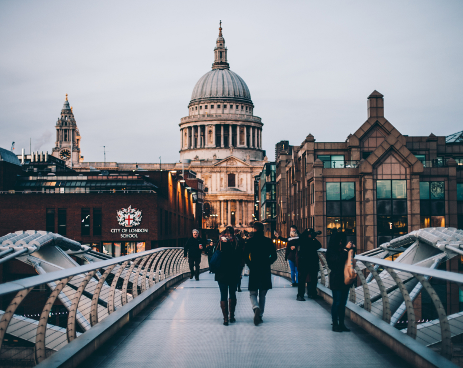

DreamCity
доступные маршруты
маршрут #12
исторический центр
Исторический центр Лондона получил название Вестминстер или дословно «западная церковь монастыря». Действительно, в 7 веке данный район начал формироваться вокруг развивающейся обители монахов. Со временем округ рос и на данный момент к нему присоединены предместья Паддингтон и сэнт-Мэрилибоун.
Кроме Вестминстерского дворца в историческом центре Лондона находится знаменитая Трафальгарская площадь с колонной Нельсона. Именно она становится венцом, который соединяет три ведущие улицы Вестминстера – Мэлл, Стрэнд и Уайтхолл.
Возможности онлайн-гида

Работает на всех платформах: браузеры, iOS, Androind и Windows
Сотни самых популярных городов, доступных на расстоянии клика
Активные, легкие, пугающие и вдохновляющие - маршруты на любой вкус
